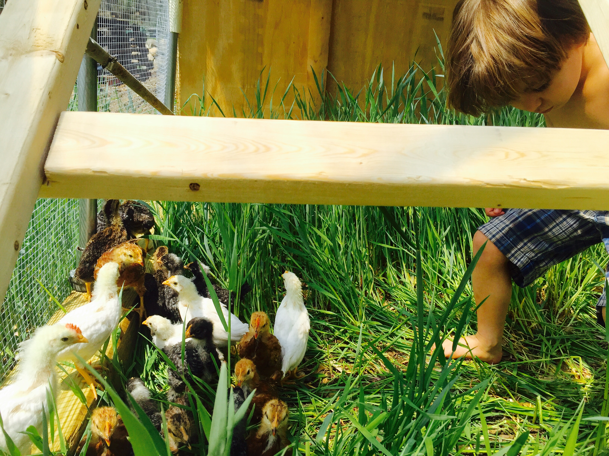
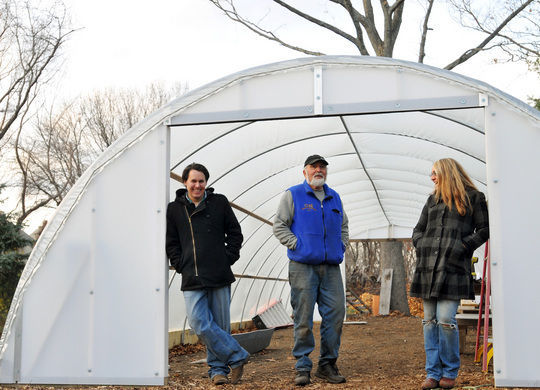
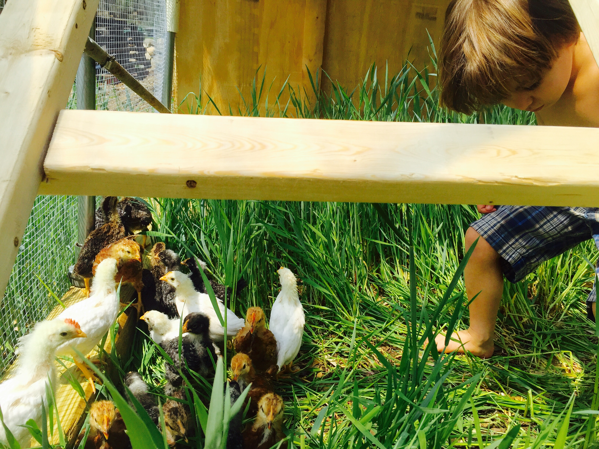
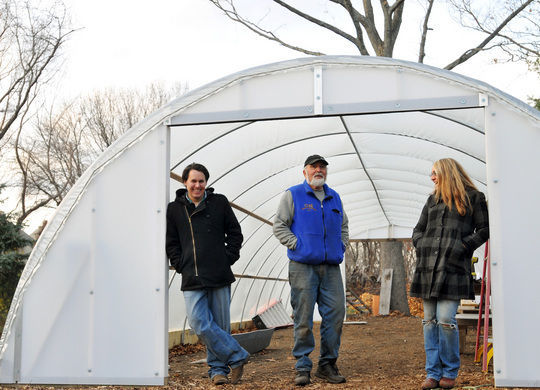

Maitland Mountain Farm was born in 2009, a father-daughter project of Peter and Holly Maitland. Peter had a long history of farming, strong tractor skills, and Holly had a delicate eye for flower tending and arranging. The duo joined the Salem Farmers Market during the market’s inaugural year, feeding friends and families with a modest but bountiful selection of veggies and wild flower bouquets. Towards the end of the farm’s first season, Holly met Andy, an ambitious cook from California who was looking for a new way to connect to the local food service industry. With Holly’s years of industry experience, gnack for gardening and Andy’s desire for a new project - the farm grew. After a wedding and a baby, the now larger Maitland family built two greenhouses and began cultivating even more veggies, flowers and herbs than ever before. Since their humble beginnings, Maitland Mountain Farm has since become a fully operational two and a half acre urban farm, carefully nestled in their neighborhood on the outskirts of south Salem.
What about the pickles, you might ask? Somewhere along the line of the farm’s early history, the young farmers experienced a bumper crop of cucumbers, and needed a solution. Holly had casually been making pickles for herself and lucky friends and family for years. With Andy’s budding business-savvy, and the support of a few enthusiastic friends in the local restaurant scene, the pickle business took off. The Maitlands began taking “Holly’s Spicy Pickles” to Farmers Markets in just their second season. Years later, they now produce over twenty different pickled products and a handful of fermented offerings. In addition to their seasonally available produce selection, you can find their pickles at a number of farmers markets and over fifty restaurants and retail locations on the northshore.